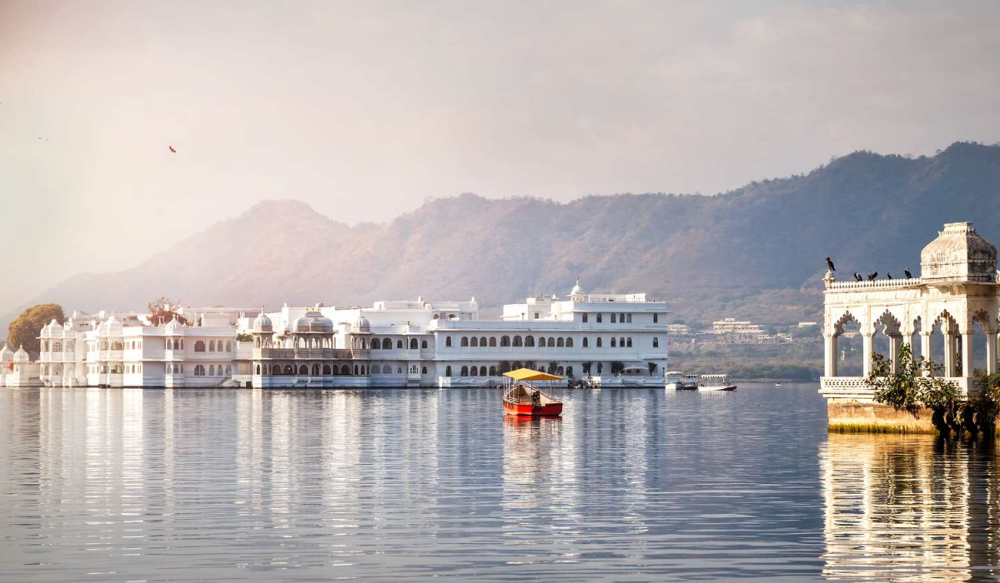
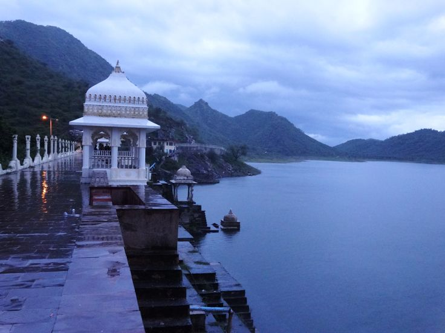

Looking for a Stay Near Lake Pichola?
Here's What to Consider
Whether you're planning a romantic getaway, a cultural holiday, or your first trip to Rajasthan's City of Lakes, staying near Lake Pichola can elevate your experience.

The Cultural & Historical
Heart of Udaipur
Few places capture the essence of Udaipur quite like Lake Pichola. With its tranquil waters, historic ghats, majestic palaces, and stunning sunset views, the lake forms the heart of the city's charm. It's no surprise that many travelers searching for hotels in Udaipur specifically look for accommodation near Lake Pichola.
Lake Pichola is more than just a scenic attraction. It serves as the cultural and historical heart of Udaipur, offering easy access to City Palace, Jagdish Temple, Bagore Ki Haveli, Gangaur Ghat, Jag Mandir, and traditional markets. Many visitors find that staying nearby allows them to spend less time commuting and more time exploring.
What Makes Staying Near Lake Pichola Special
Unlike many urban destinations, Udaipur's lakefront combines natural beauty with centuries of history. The area reflects the city's heritage through historic architecture, traditional markets, cultural performances, and local dining experiences.
Before booking, it's worth understanding what makes this area special, the different types of accommodations available, and how to choose the stay that best matches your travel style.
Stunning Views
Many properties offer views of the lake, historic palaces, ghats, and the Aravalli Hills. Sunrise and sunset are particularly memorable.
Easy Access to Attractions
Several of Udaipur's most visited landmarks are within walking distance or a short drive, making sightseeing effortless.
Cultural Atmosphere
The area reflects the city's heritage through historic architecture, traditional markets, cultural performances, and local dining experiences.
Romantic Ambiance
Lake Pichola is often considered one of the most romantic locations in Rajasthan, making it popular among couples and honeymooners.
Which Travelers Should Stay Near Lake Pichola
While the area appeals to a wide variety of visitors, it is particularly suited to certain travel styles. Understanding which category you fall into will help you decide if this is the right part of the city for your stay.
First-Time Visitors
Staying near the lake provides convenient access to the city's most famous attractions — less travel time, easy sightseeing, walkable neighborhoods, and an immersive local atmosphere.
Couples
Lake Pichola is one of the most romantic parts of the city. Couples appreciate rooftop dining experiences, sunset boat rides, heritage architecture, and scenic views. Many boutique hotels near the lake cater specifically to travelers seeking a more intimate stay.
Heritage Enthusiasts
The neighborhoods surrounding Lake Pichola are rich in history and architecture. Staying in a heritage hotel here provides a deeper connection to Mewar history, traditional craftsmanship, and historic design.
International Travelers
Visitors looking to experience Rajasthan's cultural identity often find the Lake Pichola area particularly rewarding for its authentic atmosphere and proximity to iconic landmarks.
Types of Hotels Near Lake Pichola
One of the advantages of this area is the variety of accommodation choices available. Understanding each type will help you find the right fit.

Heritage Hotels
Heritage hotels are among the most sought-after accommodations near the lake. Often housed in restored havelis and historic mansions, these properties provide traditional architecture, cultural authenticity, and historic ambiance. For many travelers, the heritage experience becomes one of the highlights of their visit.

Boutique Hotels
Boutique hotels focus on individuality and personalized hospitality. Key benefits include a smaller scale, personalized service, unique interiors, and local character. Boutique hotels near Lake Pichola are especially popular among couples and cultural travelers.

Luxury Hotels
Luxury accommodations often feature premium lake views, fine dining, spa services, and concierge support. These properties are ideal for travelers seeking comfort and exclusivity alongside the beauty of the lakefront.

Budget-Friendly Hotels
Travelers can also find affordable accommodations within easy reach of Lake Pichola. The key is balancing cost with convenience and location — proximity to the lake and Old City should still be factored into your decision.
Important Factors to Consider Before Booking
Not every hotel advertised as "near Lake Pichola" offers the same experience. Some properties are directly lakeside, a short walk away, located within the Old City, or situated on surrounding hills. Always check the exact location on a map before confirming your booking.
The historic Old City contains narrow lanes that contribute to its charm but may affect vehicle access. Consider transportation requirements, walking distances, and parking availability when evaluating options.
Location Within the Area
Always check the exact location. Properties can be directly lakeside, a short walk away, within the Old City, or on the surrounding hills — each offers a different experience.
Accessibility
The historic Old City's narrow lanes add charm but may affect vehicle access. Consider transportation requirements, walking distances, and parking availability.
View Expectations
Lake-view rooms often differ significantly from standard rooms. If the view is important to your experience, confirm the details before booking.
Hotel Style
Would you prefer a heritage haveli, a boutique hotel, a luxury resort, or a modern hotel? The style of accommodation can shape your overall experience of Udaipur.

Why Travelers Choose
Heritage Boutique Hotels
Travel trends increasingly show a preference for authentic experiences over standardized hospitality. Heritage boutique properties often provide personalized service, architectural character, cultural immersion, and a sense of place. Instead of feeling disconnected from the destination, guests become part of its story.
Kaladwas Lal Haveli, a heritage boutique hotel in Udaipur, reflects many of the qualities travelers seek when exploring the city's cultural heritage — traditional Mewari architecture, historic ambiance, personalized hospitality, and boutique-scale experiences. Heritage accommodations often provide a deeper sense of connection to Udaipur's history and character.
Book Your Stay View Rooms
Common Mistakes Travelers Make
Avoid these pitfalls to ensure your stay near Lake Pichola lives up to expectations.

Booking Based Only on Price
A lower rate may mean sacrificing convenience or atmosphere. When staying near Lake Pichola, the character of the property and its precise location are often as valuable as the room rate itself.

Assuming All Lake Views Are Equal
Room categories and view quality vary considerably between properties and even between room types within the same property. Always confirm the specific view and room category before booking.
Ignoring Walking Distances
Some attractions may be farther away than expected, even when a hotel is marketed as being "near" the lake. Always verify actual distances to the sights most important to you.
Overlooking Property Style
The experience of staying in a heritage haveli differs greatly from staying in a modern hotel. Consider what kind of atmosphere aligns with your travel goals before making a final decision.
Your Questions Answered
Everything you need to know before booking a stay near Lake Pichola in Udaipur.